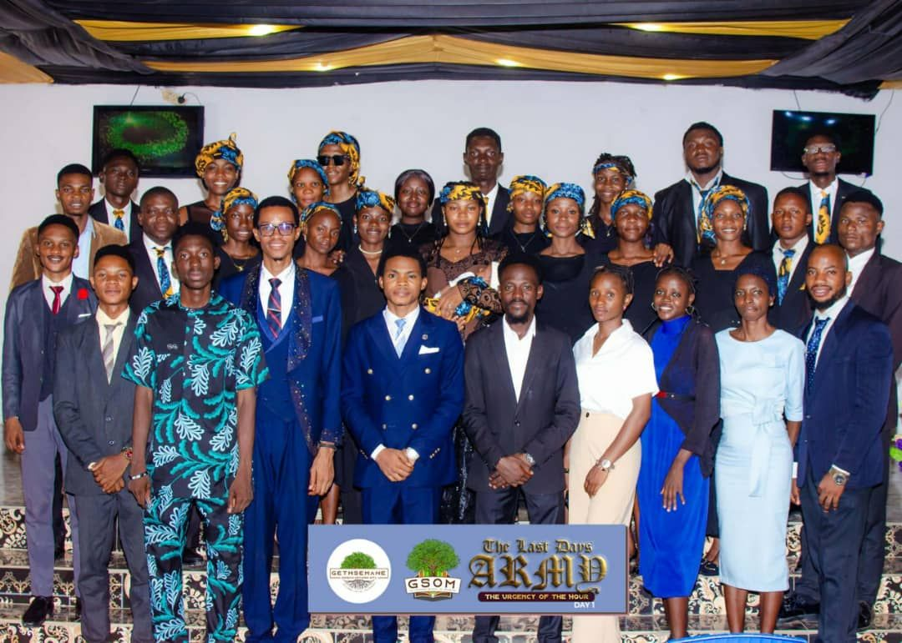
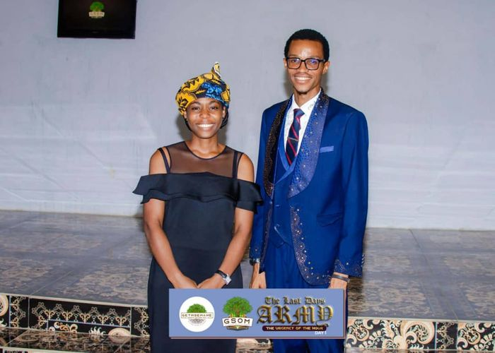
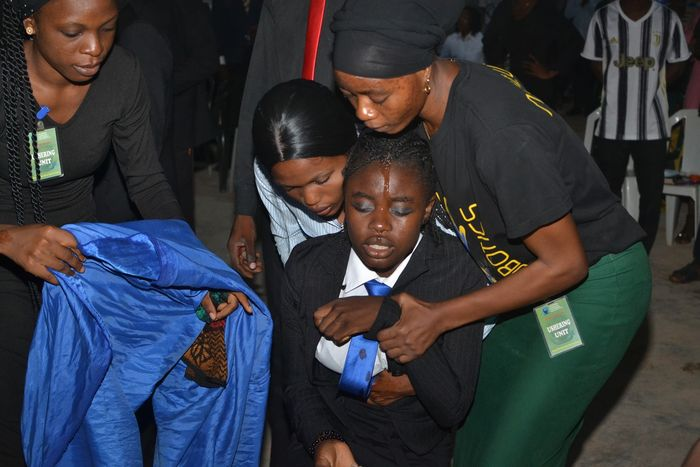
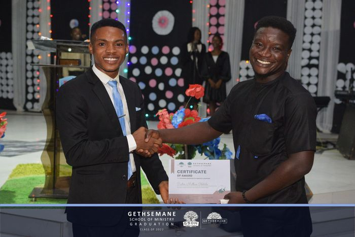
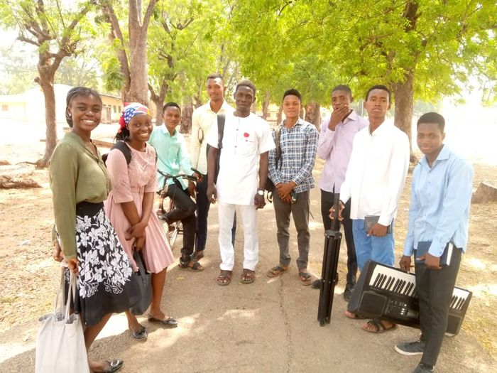

Purity
01Living unspotted in a stained world.
An 8-month discipleship training program equipping a younger generation with the ancient wisdom of the Kingdom.
We are a “Cave of Adullam”: a training ground where the distressed and those searching for purpose are transformed into mighty men and women. We exist to bridge the gap, pouring the wisdom of the fathers into the strength of the sons and daughters.
Our mandate: to raise a people who are chaste in hope, enforcing the Kingdom in faith, and winning the world in love.
This school exists to disciple people who are hungry for more of God and ready to be shaped by Him.
Apply for Wave 7For those who desire to grow in their relationship with God and understand His will for their lives.
For those who want to discover who they are and become a better version of themselves.
For those who want to be effective in the Kingdom, in their secular work and in the world.
For those committed to seeing Jesus revealed and glorified in and through their lives.
The Greatest need of a Believer is Transformation then Empowerment.We can give that to you · GSOM
Five courses over eight months. Tap a course to read what it covers.
Registration for Wave 7 is open until Saturday, 30 January 2027. It takes a few minutes, and your interview is booked the moment you submit.
Enroll for Wave 7
Living unspotted in a stained world.
Demonstrating the Spirit, not just talking about Him.
The foundation that sustains the anointing.
The motive behind every mission.
Doing God’s work God’s way.
Eight months of the Word, prayer and practice. Students learn in class, then carry it out to schools, villages, prisons and hospitals alongside our Mission & Welfare arm.
Teaching across the five courses, online and at Fed Poly, Bida.
21 days of prayer, special prayer drills and prayer stretches through the program.
Ministry out in the field with our outreach teams.
Practice and practicum, so you learn to minister by ministering.
Examinations to confirm what has been learned.
The program closes with a graduation and a dinner to celebrate the wave.
Terms and conditions apply.
Still unsure? Ask in the Wave 7 WhatsApp group after you register, or contact us at gsom.gkni@gmail.com or +234 703 105 1140.
Register on this website. As soon as you submit, we email you your interview date and a Google Meet link, and you can join the Wave 7 applicants’ WhatsApp group straight away.
A short, friendly conversation of about 15 minutes on Google Meet. We want to hear your story, your walk with God and why you want to join. Applicants who pass the interview receive an admission letter.
Tuition is free. There is an administrative fee that helps the program run well: ₦30,000 for Online students or ₦25,000 for Onsite students at Fed Poly, Bida.
We explain it at your interview, and your admission letter gives the details and a link to pay on the GSOM learning platform, where it can be spread over three monthly instalments. Nothing is paid when you register, and GSOM never asks you to pay into a personal account.
If you live in Bida, you must attend onsite, at Fed Poly, Bida. Online classes are strictly for students who live outside Bida.
About 8 months. Wave 7 registration closes on 30 January 2027 and classes begin in February 2027.
No. There is no ordination service. The program ends with a Graduation and Impartation Service.
Five courses: Pneumatology, Leadership, Ministry, Self Discovery & Personal Transformation, and Finance, with prayer, field outreach and preaching practice along the way.
“Obviously, I’m not the same again as I was earlier this year. My prayer life has been ramped up, and I’ve got a rich understanding of God’s Word. I really thank God for this opportunity.” Asimana OnyekaClass rep, Wave 5



